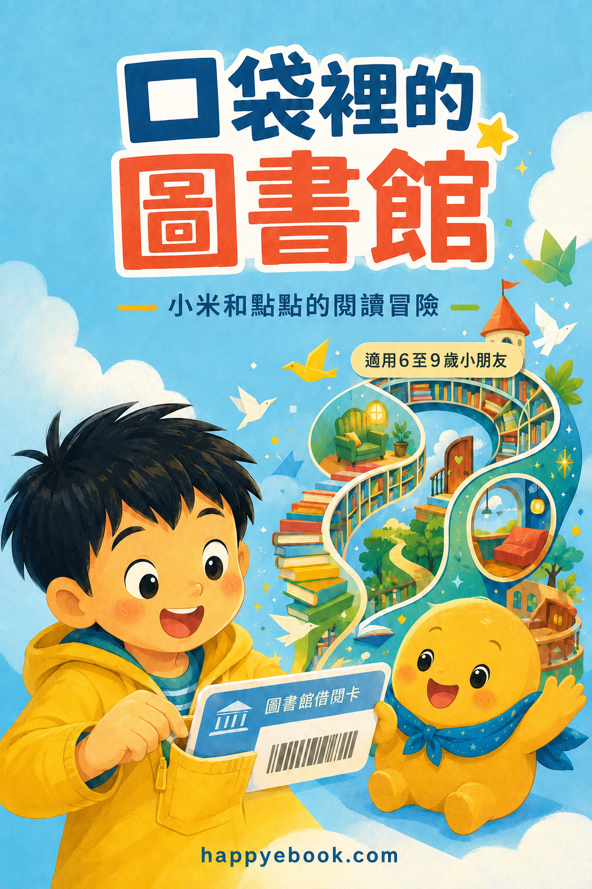

Google Play Books
口袋裡的圖書館
小米和點點的閱讀冒險

付費購買提供試閱版
口袋裡的圖書館
小米和點點的閱讀冒險
一台小小的平板，竟然裝得下一整座圖書館！ 下雨天，小米遇見住在平板裡的小書蟲點點。他們游進鯨魚的故事、飛到月亮旁邊，還發現文字可以放大、故事可以朗讀，喜歡的地方也能放上一顆小星星。 《口袋裡的圖書館》用短短的句子與溫暖插畫，陪伴約 7–9 歲的孩子輕鬆認識電子閱讀。故事也提醒孩子適時抬頭、看看遠方，並告訴他們：紙本翻一翻，電子書點一點，每一本書都是通往想像世界的一扇門。 適合自主閱讀、親子共讀，以及第一次接觸電子書的孩子。